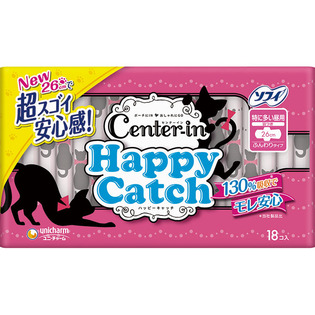

返回列表
产品名称：センターイン ハッピ－キャッチ 特に多い昼用

ユニ・チャーム センターイン ハッピ－キャッチ 特に多い昼用 １８枚（医薬部外品）
メーカー ユニ・チャーム
JANコード 4903111350346
商品の特徴
娘思いなナプキン選び。娘思いのお母さんと一緒に選んでほしい生理用品です。
１３０％吸収の安心ナプキンに超スゴイ安心感の２６ｃｍが新登場。
個別ラップはおしゃネコデザインです。
成分・分量
【表材】
ポリエステル、ポリエチレン
用法及び用量
【使用方法】
開封後はほこりや虫などの異物が入らないよう、衛生的に保管して下さい。